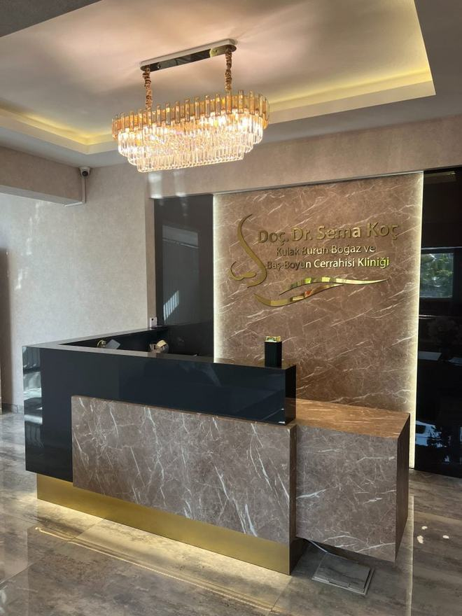
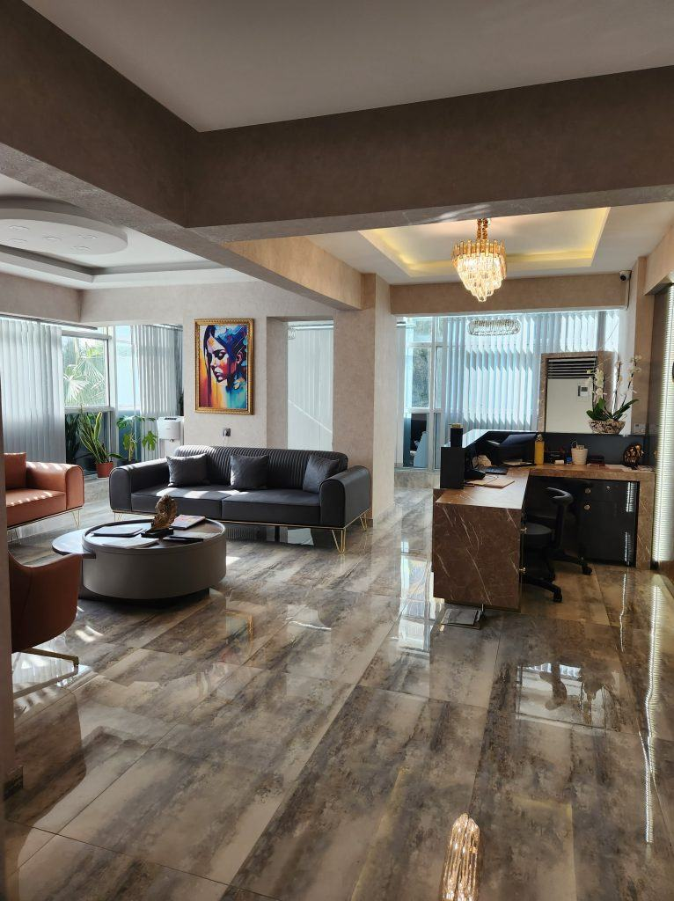
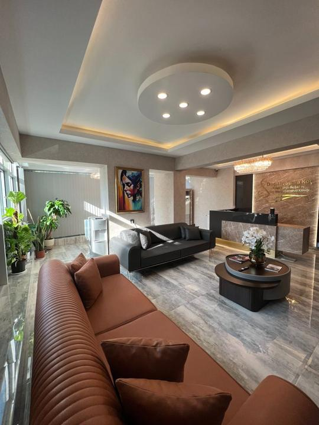
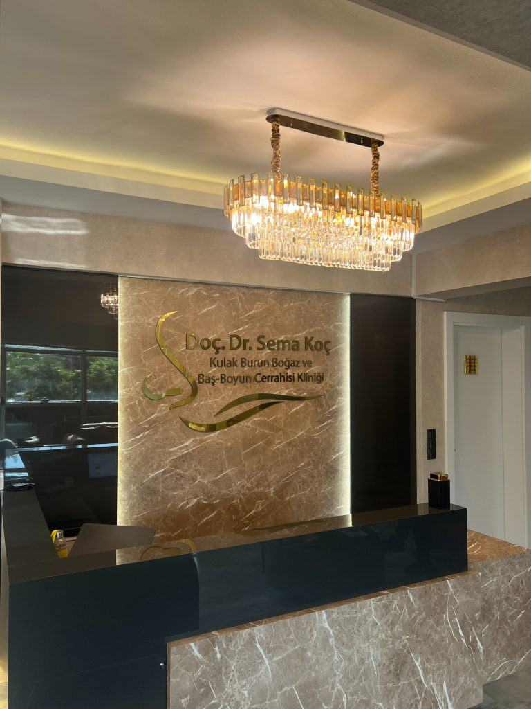
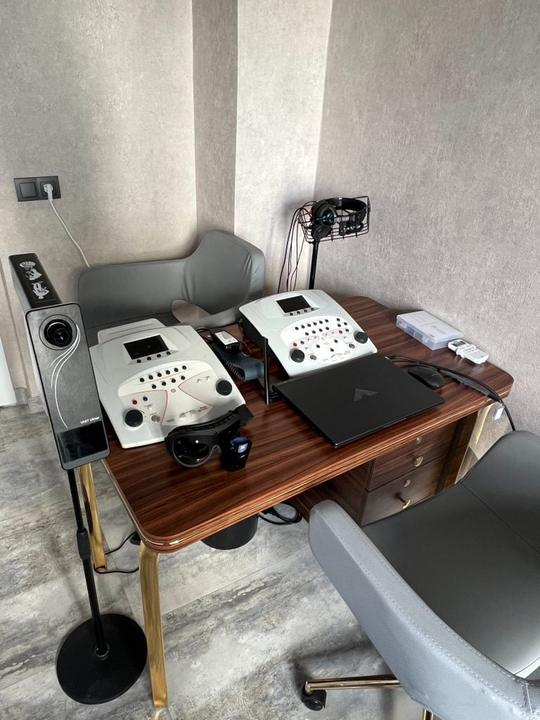
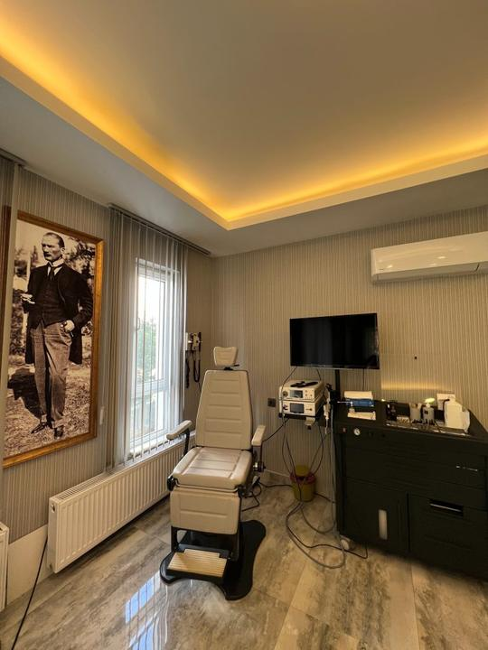
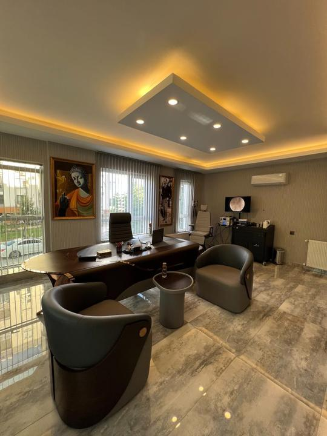

“Kulağımdaki bir sorun için şehir dışından geleceğimi belirttim; randevu saatimi programıma göre ayarladılar. İlk muayenemdeki ilgi ve profesyonellik beni çok memnun etti.”
Doç. Dr. Sema Koç · 20+ Yıl Deneyim
Duyuyorsunuz ama
Duyuyorsunuz ama
anlamıyor musunuz?
Doç. Dr. Sema Koç hem KBB hem odyoloji uzmanı: işitme testinizi yorumlayan ve tedavinizi planlayan aynı hekim.
Mikroskopik muayene
Odyometri + timpanometri
Uzman odyolog değerlendirmesi
4,8 · 529 Google yorumu
Google Değerlendirmeleri
Hastalarımız ne diyor?
4,8
Tümünü Gör
529 Google yorumu
Yorumlar, hastaların Google Haritalar üzerinde kamuya açık olarak paylaştığı değerlendirmelerden alınmıştır.
Hekiminiz
Doç. Dr. Sema Koç
Kulak Burun Boğaz ve Baş-Boyun Cerrahisi Uzmanı, Uzman Odyolog. Yirmi yılı aşkın hekimlik deneyimini Antalya'daki kliniğinde sürdürmektedir.
- Gazi Üniversitesi Tıp Fakültesi, 2001
- Da Vinci Transoral Robotik Cerrahi Eğitimi, 2012
- Doçentlik, Kulak Burun Boğaz, 2013
- Odyoloji Yüksek Lisansı · Uzman Odyolog, 2014








Neden Bu Klinik?
Kulak ve İşitme Cerrahisi sürecinde sizi ne bekliyor?
Çift Uzmanlık
Doç. Dr. Sema Koç hem KBB uzmanı hem uzman odyologtur; işitme testleri hekim gözüyle yorumlanır.
Kapsamlı Kulak Cerrahisi
Kulak zarı onarımı (timpanoplasti) ve orta kulak cerrahisi kliniğimizde planlanır.
Tam Test Altyapısı
Odyometri ve timpanometri ile kaybın tipi ve derecesi netleştirilir.
Nedene Göre Tedavi
Kulak kiri birikiminden otoskleroza kadar her tablo kendi yöntemiyle ele alınır.
Muayene Süreci
Süreç nasıl ilerler?
Ön Görüşme ve Bilgilendirme
Şikâyetleriniz ve beklentileriniz dinlenir. Sürecin kapsamı, olası riskler ve seçenekler hakkında ayrıntılı bilgilendirme yapılır.
Muayene ve Tanı
Gerekli muayene ve tetkikler gerçekleştirilir. Bulgular sizinle birlikte değerlendirilir.
Tedavi Planlaması
Muayene bulgularına göre uygun tedavi seçenekleri belirlenir; süreç ve takvim birlikte planlanır.
Kontrol ve Takip
Tedavi sonrasında kontrol muayeneleri planlanır; iyileşme süreci düzenli olarak takip edilir.
Sık Sorulan Sorular
Merak ettikleriniz
İşitme kaybı her zaman kalıcı mıdır?
Hayır. Kulak kiri veya orta kulak sıvısı gibi nedenlere bağlı kayıplar tedaviyle düzelebilir. Kaybın tipi yapılan testlerle belirlenir.
İşitme testi nasıl yapılır?
Odyometri, ses geçirmez kabinde farklı frekanslardaki sesleri duyma eşiğinizin ölçülmesidir; kısa sürer ve ağrısızdır.
Kulak çınlaması tedavi edilebilir mi?
Çınlamanın altında yatan neden belirlenerek yönetim planı oluşturulur. Yaklaşım nedene göre kişiden kişiye farklılık gösterir.
Randevu Bilgisi Alın
İlk adımı atın: muayene ile başlayalım
Bilgilerinizi bırakın, WhatsApp üzerinden randevunuzu birlikte planlayalım. Görüşmeler Türkçe, İngilizce, Rusça ve Ukraynaca yapılabilmektedir.
Randevu Bilgisi Alın
Bilgilerinizi bırakın, görüşme WhatsApp üzerinden otomatik başlasın.